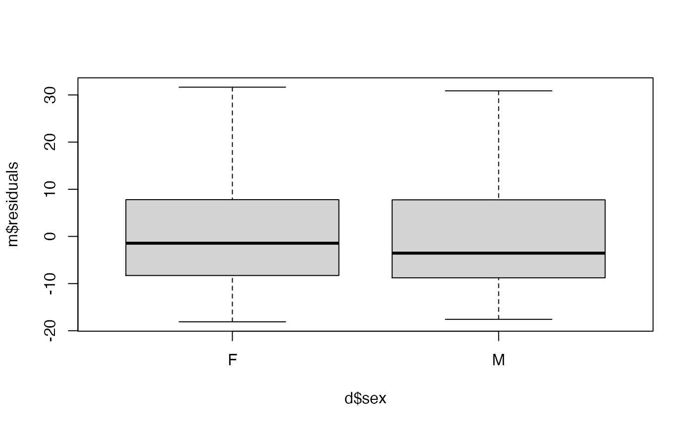
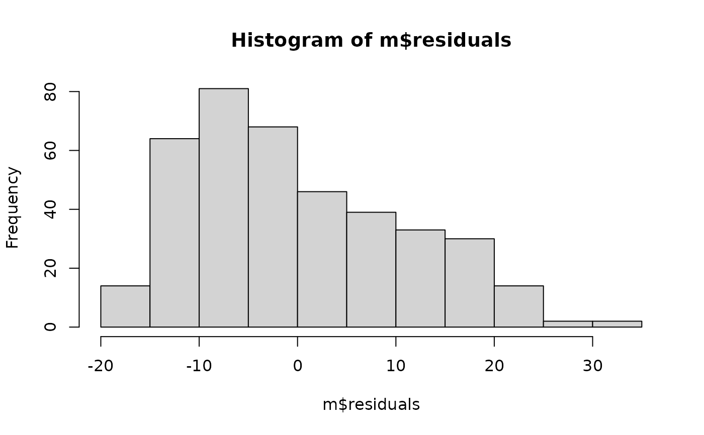

Get it Dunn is a small regional run that got extra attention when a runner, Nichole Porath, made the Guiness Book of World Records for the fastest time pushing a double stroller in a half marathon. This dataset contains results from the 2017 and 2018 races.
Format
A data frame with 978 observations on the following 10 variables.
- date
Date of the run.
- race
Run distance.
- bib_num
Bib number of the runner.
- first_name
First name of the runner.
- last_initial
Initial of the runner's last name.
- sex
Sex of the runner.
- age
Age of the runner.
- city
City of residence.
- state
State of residence.
- run_time_minutes
Run time, in minutes.
Source
Data were collected from GSE Timing: 2018 data, 2017 race data.
Examples
d <- subset(
get_it_dunn_run,
race == "5k" & date == "2018-05-12" &
!is.na(age) & state %in% c("MN", "WI")
)
head(d)
#> # A tibble: 6 × 10
#> date race bib_num first_name last_initial sex age city state
#> <chr> <chr> <int> <chr> <chr> <chr> <dbl> <chr> <chr>
#> 1 2018-05-12 5k 1 Jeff A M 59 MENOMONIE WI
#> 2 2018-05-12 5k 2 Julie A F 58 Menomonie WI
#> 3 2018-05-12 5k 3 Amy A F 31 Elmwood WI
#> 4 2018-05-12 5k 4 Ashley A F 33 Cadott WI
#> 5 2018-05-12 5k 6 Bob A M 60 Boyd WI
#> 6 2018-05-12 5k 7 Eric A M 30 Boyd WI
#> # … with 1 more variable: run_time_minutes <dbl>
m <- lm(run_time_minutes ~ sex + age + state, d)
summary(m)
#>
#> Call:
#> lm(formula = run_time_minutes ~ sex + age + state, data = d)
#>
#> Residuals:
#> Min 1Q Median 3Q Max
#> -18.109 -8.470 -2.064 7.760 31.646
#>
#> Coefficients:
#> Estimate Std. Error t value Pr(>|t|)
#> (Intercept) 38.94177 2.61812 14.874 < 2e-16 ***
#> sexM -5.36736 1.13188 -4.742 2.98e-06 ***
#> age 0.11232 0.03148 3.569 0.000404 ***
#> stateWI -1.13071 2.33534 -0.484 0.628534
#> ---
#> Signif. codes: 0 ‘***’ 0.001 ‘**’ 0.01 ‘*’ 0.05 ‘.’ 0.1 ‘ ’ 1
#>
#> Residual standard error: 10.77 on 389 degrees of freedom
#> Multiple R-squared: 0.09101, Adjusted R-squared: 0.084
#> F-statistic: 12.98 on 3 and 389 DF, p-value: 4.246e-08
#>
plot(m$fitted, m$residuals)
boxplot(m$residuals ~ d$sex)

plot(m$residuals ~ d$age)
hist(m$residuals)
